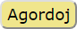
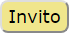

Interfaco
Jen kelkaj mallongaj klarigoj por ludi la movojn :
-
 montras la poentojn kaj la uzeblajn bonusojn de la duajn ludantoj.
montras la poentojn kaj la uzeblajn bonusojn de la duajn ludantoj.
-
 montras la kreditojn de la aktiva ludanto.
montras la kreditojn de la aktiva ludanto.
-
 akceptas aŭ malfaras la ludvicon de la aktiva ludanto.
akceptas aŭ malfaras la ludvicon de la aktiva ludanto.
-
 elektas la sprinton.
elektas la sprinton.
-
 montras la eblo de ŝoti dum ĉi tiu ludvico.
montras la eblo de ŝoti dum ĉi tiu ludvico.
-
 montras la eblo de kuri dum ĉi tiu ludvico.
montras la eblo de kuri dum ĉi tiu ludvico.
-
 montras la ebloj de ŝoti kaj kuri dum ĉi tiu ludvico.
montras la ebloj de ŝoti kaj kuri dum ĉi tiu ludvico.
- Malelektu la elektitan futbaliston/pilkon antaŭ elektu ion ajn.
Agordoj

estas uzata por elekti ludmanieron, lingvon, ktp.
Jen la ludmanieroj :
- Du proksimaj lundantoj uzas la saman retumilon.
- Du malproksimaj ludantoj uzas siajn proprajn retumilojn.
- Unu ludanto ludas kontraŭ artefarita intelekto (AI).
- Du AI ludas unua kontraŭ alia.
Ludmanieroj uzante AI ankoraŭ ne estas implementitaj.
Invito

montras aŭ kaŝas la interfacon TogetherJS
, kiu ebligas al vi inviti malproksiman amikon ludi BALTEK.
La interfaco TogetherJS
permesas al du malproksimaj ludantoj sinkronigi siajn retumilojn kaj ankaŭ babili.
La interfaco TogetherJS
provizas helpon en la angla. Klaku la avataron.
Sinkronigu la du retumilojn antaŭ komenci novan ludbatalon.
Ambaŭ ludantoj devas apliki si mem la regulon de alternante ludvicoj,
ĉar la retumilo de la pasiva ludanto neniam estas blokita.
Reguloj
Atingu regulojn pere de la butono Reguloj
.
Portebleco
BALTEK estas ludebla pere de retumilo, do ĝi estas relative portebla.
Tamen, ĝia aktuala ergonomiko bezonas sufiĉe grandan ekranon kaj muson.
Adapti BALTEK-on al saĝtelefono estas planita en alia fazo.